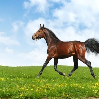

El caballo es un mamifero perisodactilo domesticado de gran porte. En las labores agricolas y de granja se destaca por su velocidad, fuerza de tiro y elegancia en el trabajo de campo.
Volver a la pagina principal